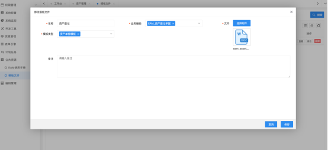
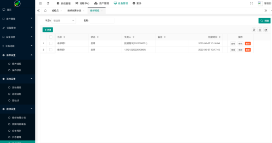

Foxnic-EAM系统使用手册
1系统管理
1.1权限管理
1.1.1账户管理
系统账户管理，本菜单提供系统所有基本账户的管理，该账户菜单中账户同时也作为登录本系统的账户。其中角色为该账户拥有的系统功能角色。
本账户管理的账户作为登录本系统的登录账户，该账户于登录后的员工账户进行绑定，绑定操作在属主设置中完成，默认系统参数为在人事里创建员工时，同时会自动创建一个登录账户。在多租户环境下，一个账户可以对应多个员工账户，实现一个账户在多个公司内部之前的用户切换。
语言：
默认在多语言环境下，为账户选择系统的主语言，注意的是系统环境语言优先级高于设置的语言选项。
属主设置：
账户的属主设置，作为该账户的所属租户公司和具体租户公司的员工进行关联，支持一对多。当该租户公司的该账户登录时，将当前默认的属主设置关联的具体的公司员工作为当前登录的账户。
角色:
系统基于资源、角色、用户的权限体系，先将功能赋予角色，将角色赋予用户，该用户获取相关功能权限。
登录设置：
系统登录支持，账户、手机号、工号、默认登录判断优先级在系统配置文件中设置。
重置密码：
系统管理员对应用的登录账户进行密码管理，有权限对账户进行密码的重置，当前重置密码时需知道用户原始密码才可以进行重置操作。
默认密码：
当自动创建用户参数开启时，员工创建后会同步创建登录用户，默认登录用户密码配置在参数菜单的参数项system.password.default控制。
登录界面:
系统默认的登录地址为http[s]://domain_name:8090/login.html,默认登录界面提供三个输入框。
账户：同时支持账户、手机号、员工工号等多途径方式进行登录，判断优先级在yml文件中指定。
密码：用户账户的用户密码。
验证码：系统验证码。
提示:
右下脚提供多语言切换功能。
1.1.2功能角色
功能角色，系统采用基于角色的访问控制方法，通过功能角色赋予系统人员相关权限。
注意：
建议所有的功能角色都勾选系统管理->权限管理->基础接口这个选项。该菜单包含系统使用的相关基本接口。
1.1.3业务角色
业务角色，业务角色承载了系统多种功能角色的实现，包含数据角色、流程角色等，创建相关业务角色后，点击员工按钮，相关员工就拥有该业务权限，如果业务权限代表数据权限范围，则表示该员工拥有该数据权限，如果该业务角色代表流程角色，则选定的员工拥有相关流程审批权限。
1.1.4菜单管理
系统菜单管理，主要面向开发人员，对于整个系统的菜单进行配置，系统管理员通可以调整菜单的位置，进行更友好的去显示。
相关字段说明：
编号：系统自动生成。
名称：菜单的具体名称。
菜单类型：支持目录、页面、接口、功能点，其中目录为逻辑上的概念，页面会具体菜单的显示页面，接口为API接口提供赋权操作，功能点可以支持按钮，逻辑操作等相关功能。
权限：按照规范去编写权限规则，要求系统内部权限编码唯一即可。
菜单图标：前端系统功能菜单树显示的友好图标。
页面路径：当菜单类型为页面时，指定具体打开的页面地址。
路由地址：当菜单类型为页面时，指定具体打开页面地址对应的浏览器URL路由地址
资源清单：当前菜单节点，需要访问的资源地址。
动态控制：略
1.1.5系统资源
系统权限资源管理，主要面向开发人员，对于整个系统的权限资源进行统一管理，当前主要包含系统内部所有URL访问地址。在二次开发过程中，如果有新的接口，程序默认会注册该接口到这张表中，如访问资源未注册，也可以手工进行新建资源的方式完成注册操作。
相关字段说明：
名称：系统权限资源名称
类型：支持页面和接口。
访问控制：登录和授权
登录：该策略代表用户登录后就拥有该资源的访问权限
授权：该策略代表用户需要获取该资源的授权，才能进行访问
地址：访问URL资源地址
Method：访问资源的方法
数据库表：该资源对应的数据表，非必须，用作标识
模块：该资源对应的系统模块，非必须，用作标识
1.1.6数据权限
数据权限管理，主要面向开发人员，对VO的权限进行设置。
1.2系统配置
1.2.1系统参数
系统参数功能支持多个profile切换，当未找到相应设置的profile时，默认的profile生效。
系统主要参数说明：
system.index.logo：系统登录后右上角的显示信息。
system.cachekey：当修改该数据时，会对页面进行刷新，每次系统进行升级更新后建议修改，该数值没有具体要求，可以按照时间戳进行修改。
system.login.default：Demo使用，系统登录页面默认显示的信息
system.password.default：系统创建用户时的默认密码
system.login.captcha.any:Demo使用，系统登录页面时无视登录验证码
system.employee.createUser：当在组织架构创建员工时，是否同步创建他的用户登录账户，建议同步创建。
system.language.range：系统支持多语言，语言可选范围配置。
eam.assetDataPermissions：资产管理系统默认对资产访问进行控制，如果该值设置为0，则全局关闭资产访问的权限设置，所有人将能看到所有资产数据。
eam.assetImportAssetCodeKeep：当批量导入资产数据时，对资产数据的资产编号列处理的策略，默认资产编号列为系统自动生成，当该设置为1，则不会自动生成资产编号，采用excel手工填写的值作为资产编号，该功能建议在首次资产初始化时使用，正常情况下设置为0即可。
eam.assetImportDataReplenish：如果设置为1，当批量导入资产数据时，对应部分下拉框数据并未在数据字典中存在，将自动创建，建议设置为0
eam.assetStatusColumnDisable：在新建数资产时，是否可以资产的资产状态列进行编辑。
eam.assetSerialNumberIsUnique：是否保持当前所有资产数据序列号唯一。
1.2.2公司管理
当本系统处于SAAS模式下，支持多公司，默认至少存在一家公司。
1.2.3租户管理
当本系统处于SAAS模式下，支持多租户管理，默认至少存在一家租户公司。
1.2.4序列管理
序列管理菜单主要面向开发人员，系统中使用的相关序列配置，不建议进行修改。通过序列可实现自增ID，每日自增ID等功能。
1.2.5数据字典
本系统的数据字典管理功能。
涉及资产管理的数据字典：
资产来源、资产安全等级、资产报修类型、资产处置类型、资产审批类型、维保状态、设备运行环境、资产盘点计划类型等
1.3变更管理
1.3.1变更定义
本系统的变更定义菜单提供系统内部相关变更流程的支持。涉及流程变更包含资产调拨、资产基本财务变更等

当前系统的变更支持两种审批模式：
简单模式：当变更模式为简单模式，则只能支持单个审批节点的变更，审批节点支持人活着业务角色。
流程引擎：通过流程引擎的方，灵活定义流程节点实现业务变更的支持。
变更代码作为业务变更指定唯一键。
1.4表单引擎
1.4.1类目管理
类目管理支持资产管理的常用分类管理，支持自定义属性，自定义布局布局。属性可以支持继承,当前类目管理可为组织、员工、资产分类提供扩展功能。
基础信息：
编号：类目编号为系统自动生成
代码：类目代码，默认自动生成，代码上可通过类目编号来区分不同功能的类目
名称：类目名称
存储表：当类目支持自定义属性的时候，需指定一张存储表，不管指定哪一张逻辑上没有区别，为规范起见，建议同一类型类目指定同一张存储表。
字段管理：
当类目支持多个自定义属性时候，按照要求对类目的节点的属性进行扩展，最终属性汇总分为可编辑版本和生效版本，生效版本为当前系统使用的版本。
1.5计划任务
1.5.1任务配置
本系统任务调度配置，可对系统内常用的任务进行定时调度。默认有几个常用的后台任务定期执行，例如eam_create_user_action任务代表用户新建后，默认赋予相关权限。
注意：
执行器的java类型为自动识别，新建的job类重启后生效。
1.6公共资源
1.6.1 业务使用
提供在线使用手册预览
1.6.2模版文件
模板文件菜单，提供本系统单据相关的下载文件模板，本模版菜单默认已进行初始化，默认上传的路径在application.yml文件中定义的上传路径目录下面的upload/tpl/T001（T001代表租户默认的租户ID）。

相关模版文件可通过后台的模版文件菜单进行下载、编辑、更新。如果部分文件不存在，可能导致前端使用的模版，例如各类业务单据、资产导入、导出等涉及模版渲染的功能无法正常使用。
1.7系统服务
1.7.1业务编码
编码分配菜单，本菜单主要为开发者使用，定义涉及系统相关的业务编码定义。
1.7.3编码分配
编码分配菜单，本菜单主要为开发者使用，通过关联业务编码和编码规则指定对应的业务编码生成规则。
1.7.4编码规则
编码规则菜单，本菜单主要为开发者使用，选取系统的编码属性元素，按照相应格式要求组成一个编码生成规则，当系统选用当前规则时，将通过该规则生成对应的业务编码。
1.7.5编码属性
编码属性菜单，本菜单主要为开发者使用，列举当前支持生成编码的组成字段，不建议进行修改。
2人事管理
2.1组织管理
本菜单提供对公司的组织管理，组织架构设计原则为组织节点类型分为公司和部门，职位必须挂在组织节点下面，人员必须挂在岗位下面。
员工支持两种岗位，主岗位和副岗位。通常岗位设置用作流程选择使用。
员工新建：
当左侧树菜单选择员工时候，右侧员工新建按钮可见，否则处于灰色状态，确保员工新增在岗位下面的。也可以通过员工管理菜单进行员工新建和员工信息的管理。

注意：
新建员工时，组织节点必须选择职位，人员挂在职位下面。
2.2员工管理
本菜单提供员工管理的基本操作，对员工进行添加、删除及修改。当新建员工时，组织节点必须选择职位，人员挂在职位下面。
注意：
系统默认新建员工后，会同步创建该员工的登录账户，用于登录系统。默认创建的账户可能没有相关业务权限，需要在账户管理菜单进行角色权限赋予。
3资产管理
3.1工作台
3.1.1资产新增数据审批
当系统开启新增资产新增数据审批时，资产维护人员在资产管理数据新增资产后，对新增加的数据进行送审。送审后相应数据权限和审批权限的审批人登录系统后，在资产新增数据审批菜单看到待审批记录，选择通过或拒绝审批进行操作。
3.1.2资产基础变更审批
当系统开启新增资产基础变更审批时，在对选择的资产数据需要进行变更时，拥有该数据权限和审批权限的审批人登录系统后，在资产基础变更审批菜单看到需要变更的记录，选择通过或拒绝进行审批操作。
3.1.3资产维保变更审批
当系统开启新增资产维保变更审批时，在对选择的资产数据需要进行变更时，拥有该数据权限和审批权限的审批人登录系统后，在资产维保变更审批菜单看到需要变更的记录，选择通过或拒绝进行审批操作。
3.1.4资产财务变更审批
当系统开启新增资产财务变更审批时，在对选择的资产数据需要进行变更时，拥有该数据权限和审批权限的审批人登录系统后，在资产财务变更审批菜单看到需要变更的记录，选择通过或拒绝进行审批操作。
3.1.4资产报废审批
当系统开启资产报废审批时，在对选择的资产数据需要报废时，拥有该数据权限和审批权限的审批人登录系统后，在资产报废审批菜单看到需要报废的记录，选择通过或拒绝进行审批操作。
3.2资产管理
3.2.1资产管理
资产管理菜单提供资产的基本管理服务，包括资产的新增、修改、删除、资产标签、批量导入、导出。当资产新增开启流程审批时，新增资产本资产的办理状态为未完成，当前新增的资产在资产台账中不能被查询到，只有新增资产审批通过，资产办理状态为完成，这可在资产台账中正常查询到当前新增的资产。
资产登记：
本菜单提供的资产登记进行资产的登记功能，默认新建资产登记后，当前资产的办理状态处于草稿状态，需要对资产进行确认后才可以在资产台账中查询到新登记的资产。
资产新增过程中如果报call nextval相关错误，表示系统依赖序列的存储过程初始化可能失败，请重新创建。
资产复制：
快速对相似资产进行批量的复制，复制过程中，部分资产属性将会重置为空。
资产明细：
对本条资产的常规操作进行记录。
3.2.1.1 资产数据导入
本系统支持通过编辑Excel模版进行批量的数据导入操作，需要说明是默认导入的资产状态为未完成草稿状态，需要进行导入后再次对资产进行确认操作，经审批或确认后导入的资产在资产台账中才可以查询到。
以下为导入操作步骤
步骤一：导入模版确认
该模版文件位于后台服务器upload/tpl目录的位置，也可通过前端模版文件菜单进行编辑修改。

步骤二：下载导入模版
模版文件说明:模版文件两列
第一列为资产导入的字段
第二列为数据库映射字段，使用场景为自定义属性导入时有效
步骤三：编写导入资产数据
将模版文件的第一行映射字段删除，编辑相关资产数据
导入动作判断说明
如果最后一列存在资产主键，将做更新操作，否则将执行插入操作
资产数据格式说明
导入的内容格式包含:字符串文本，日期，数字
在导入前优先确保相关基础配置数据的正确，如使用人，资产类别，位置，来源等基础数据
例如:资产类别字段后台需要通过关联对应的关联表获取编号，则必须确保填入的资产类别名称能在相关联表获取到。
人员字段说明
资产字段中使用人、管理人这类人员字段数据库存储方式为组织人员的编号，并非明文字符串存储。组织体系内部人员姓名可能重复，在导入过程中无法通过单一姓名去判断具体人员，解决方案是通过人员员工工号唯一确定，在资产导入的人员字段须中包含员工和工号。
选择资产Excel文件执行导入操作，资产管理界面右下角，如果当前资产管理没有数据，右下角对导入数据将会隐藏，可以先创建一条数据。
3.2.1.2 在线Excel导入
资产管理界面支持通过在线Excel方式进行批量导入资产数据，通过上诉导入的资产状体默认为未完成，需经过审批或者确认将资产自动变更为已完成状态，完成整个资产的导入过程。
具体步骤如下
步骤一：点击批量入库按钮
步骤二：编辑在线Excel资产数据
注意:
其中标题为红色部分的资产属性是非普通文本模式，当前支持下拉框、数字类型、日期字段，对于这些属性字段后台必须通过验证才能正常对所需对资产进行导入。
步骤三：点击保存，刷新前端列表
3.2.1.3资产标签打印
当前提供多种方式支持标签打印，比较通用的标签打印方式为选择需要打印的标签，点击打印，将浏览器打开pdf页面，点击打印即可进行批量打印。
步骤一:选择资产，点击打印资产标签
步骤二:点击右上角打印
步骤三:点击右上角打印，选择目标打印机，进行批量标签打印。
标签打印机的驱动安装、设置略。（标签打印机推荐Zebra ZD888）
3.2.2资产派发
资产派发菜单提供资产的派发服务，员工发起资产领用服务，可通过资产领用发起申请， 管理员可通过资产派发在创建单据并确认后，资产状态将变更为使用人的资产在用状态。
3.2.3资产退库
当资产领用后，可对领用的资产做退库处理。
3.2.4资产借用
资产借用菜单提供资产的借用服务，员工发起资产借用服务，可通过资产借用发起申请，在创建资产借用并确认后，资产状态将变更为资产借用。当借用期满，可进行归还操作。

3.2.5资产调拨
资产调拨菜单提供资产的调拨功能，通过资产调拨，可改变资产的归属组织和管理员资产基本属性。在未开启流程状态时，对创建的的资产调拨单据进行确认，资产相关属性数据将按照单据的设置进行改变。
3.2.6资产转移
资产转移菜单提供资产的转移功能，通过资产转移，可改变资产的使用组织、管理员、存放位置、位置详情等资产基本属性。在未开启流程状态时，对创建的的资产转移单据进行确认，资产相关属性数据将按照单据的设置进行改变。
3.2.7资产报废
资产报废菜单提供资产的报废功能。
当有资产需要进行报废时候，在选择相应资产后单击保存。
当报废开启流程审批时，需要对报废的单据进行送审操作，流程配置中的相应审批人需要对该单据进行审批操作。
在报废单据审批结束后，如果审批同意，则对该批需要报废的资产状态设置为报废。但仍旧会在资产台账中可以查询到，如果需要完全在资产台账中查询不到已报废的资产，可对当前报废的资产单据做清理操作，在清理操作后，该批资产在台账中无法显示，清理后的资产可以通过报表管理的资产清理清单中查询到。
资产清理：
资产报废单据结束后，资产状态将处于待报废状态，当前资产在相关资产台账中依旧为可见状态，在对本单据涉及的资产进行资产清理操作后，资产状态将变为已报废状态，资产台账中无法查询到该资产，只能通过资产清理单中进行清理后的资产查询。
3.2.8资产入库
资产入库菜单提供资产根据资产单据号批量入库的功能，当新生产单据号时候，当前编辑的资产为未生效状态，在支持台账及资产管理菜单页面不可见状态，只有当对入库单据进行审批或进行确认操作后，入库的资产状态自动修改为已完成状态，这一完整的过程完成整个资产入库操作。
3.2.9资产报修
资产报修菜单提供资产的基本报修功能。
当有资产需要进行报修时候，在选择相应资产后单击保存。
当流程未启用时，点击确认操作，进行资产的实际报修环节，在确认维修后，资产状态变为维修中
当资产维修结束后，点击结束维修，资产状态变为原维修前状态。
3.2.10个人使用资产
公司员工登录系统后，通过资产使用人字段去判断该资产是否自己拥有的资产，该菜单显示登录的员工当前拥有的所有资产数据。
3.2.11个人管理资产
公司员工登录系统后，通过资产管理人字段去判断该资产是否时自己管理的资产，该菜单显示登录的员工当前管理的所有资产数据。
3.3资产台账
3.3.1资产公共台账
资产公共台账，提供系统内部查询所有资产的功能，可以按照资产状态、规格型号、来源等多个维度查询系统内部资产情况。
相关动作
查看：可以查询该资产条目详细的资产信息。
变更明细：可以查询该资产条目的所有曾经进行过的变更记录。
3.3.2使用组织台账
资产使用组织台账，提供系统内部查询所有资产的功能，可以通过结合左边的使用组织树结合其他筛选条件进行多个维度的查询系统资产情况。
3.3.3归属组织台账
资产归属组织台账，提供系统内部查询所有资产的功能，可以通过结合左边的归属组织树结合其他筛选条件进行多个维度的查询系统资产情况。
3.3.4分类查询台账
资产分类查询台账，提供系统内部查询所有资产的功能，可以通过结合左边的分类查询台账结合其他筛选条件进行多个维度的查询系统资产情况。
3.3.4员工查询台账
人员查询台账，可以通过本菜单提供的功能，可以快速查询系统内部所有人员拥有的资产数据。
3.3.5存放位置台账
存放位置台账，可以通过本菜单提供的功能，可以快速查询系统内部所有存放位置的资产数据。
3.4资产变更
3.4.1资产基础变更
EAM系统提供对资产的基本属性字段的变更操作，所有资产字段主要分为基础变更、维保变更和财务变更，如需要对资产基本字段进行修改，可以使用对应的资产变更菜单进行操作，变更菜单支持简单流程，对需要变更的记录进行送审，审核通过进行数据的变更，并将变更的数据记录在对应的资产变更明细条目中。
注意：
变更明细中如果有变动，则表明将对选择的数据进行该字段的变更，不需要变更则无需填写内容。
3.4.2资产维保变更
系统提供对资产的基本属性字段的变更操作，所有资产字段主要分为基础变更、维保变更和财务变更，如需要对资产基本字段进行修改，可以使用对应的资产变更菜单进行操作，变更菜单支持简单流程，对需要变更的记录进行送审，审核通过进行数据的变更，并将变更的数据记录在对应的资产变更明细条目中。
3.4.3资产财务变更
系统提供对资产的基本属性字段的变更操作，所有资产字段主要分为基础变更、维保变更和财务变更，如需要对资产基本字段进行修改，可以使用对应的资产变更菜单进行操作，变更菜单支持简单流程，对需要变更的记录进行送审，审核通过进行数据的变更，并将变更的数据记录在对应的资产变更明细条目中。
3.5财务管理
在财务管理中，支持对固定设备进行折旧处理。整个过程先配置折旧方案，一般折旧方案配置完后不在修改，然后对折旧方案对具体资产进行计算规则配置。具体在折旧操作中，通过导入资产进行后，进行对折旧处理，最后将处理的资产结果同步至资产主表。
3.5.1配置折旧方案
本菜单界面生成资产折旧配置方案，整个折旧方案分为折旧配置和属性计算方法配置。
步骤一：
折旧方案配置
属性：
编码：
在财务折旧方案的具体实现类对应。
残值选择：
选择跟随系统，在折旧操作中的资产残值将会有资产属性中获取。否则按照当前的设置值进行。
资产分类：
不选择资产分类，默认会将系统所有资产进行折旧操作。
折旧方式：
按月折旧。
状态：
当前方案是否启用
首次折旧方式:
当月折旧和次月折旧。
残值率：
当残值选择残值选择当前方案时，所有资产残值为当前方案设置的值。
步骤二：
资产财务属性字段计算规则配置，此表单对需要折旧的字段进行计算规则的配置。
配置完成后如图所示:
3.5.2折旧操作
折旧操作就是按照财务会计周期，对所选择资产进行折旧处理。
折旧处理操作步骤
步骤一：新建本次折旧单据，主要选择折旧方案和业务日期，业务日期表示当前折旧会计期。
步骤二：生产本次折旧单据后，点击明细，在下图中点击导入资产，系统会根据当前折旧方案将本次方案需要折旧的资产数据导入进来。
步骤三：点击执行折旧（不需要选择资产），默认会对当前导入的所有资产进行折旧操作，折旧结果如下图：
折旧规则：
正常折旧
经过折旧规则计算，已对该资产进行折旧。
已折旧完
判断依据为已使用寿命超过可使用寿命，按照已折旧完规则进行计算。
不在折旧
通过手工在折旧明细中排除的资产，本次排除后，下次折旧时该资产依旧会被判断为不在折旧状态，不在折旧状态运算时按照不在折旧规则进行计算。
折旧结果：
计算成功
经过折旧规则计算，已对该资产进行折旧
计算失败
计算过程中发生错误，请处理后重新计算
待计算
刚导入资产后，折旧结果为待计算，或者在折旧过程中发现资产折旧有报错会停止，后面为计算部分资产依旧为待计算。
首次系统初始化导入说明：
场景，在首次导入资产后，需要对资产的折旧数据进行补充，因折旧过程中运算公式可能依赖上一次折旧结果，请务必保证这些数据的正确。
资产主表eam_asset
字段 | 字段 | 折旧 | 说明 |
purchase_date | 采购日期 | Y | 看是否参与折旧 |
register_date | 入账日期 | N | 看是否参与折旧 |
financial_category_id | 财务编号ID | Y | 获取使用寿命 |
original_unit_price | 未税成本 | Y | 参与折旧，期末原值 |
residuals_rate | 残值率 | Y | 参与折旧 |
depreciation_oper_time | 最后折旧时间 | Y | 参与折旧 |
asset_used_service_life | 已使用期限 | Y | 参与折旧 |
3.6报表管理
3.6.1资产清理清单
资产报废后，可以对资产进行清理，清理后的资产在系统内部不可见，对清理后的资产进行归档，通过资产清理清单查询已经清理过的资产。
3.7预警中心
3.7.1维保到期预警
维保到期预警，可以查询当前资产是否有维保即将到期。
3.7.2资产借用预警
资产借用预警，可以查询当前资产出借总体情况。
3.7.3资产序列唯一预警
资产序列唯一预警，可以查询系统内部是否存在资产序列重复数据。
3.8系统设置
3.8.1财务分类管理
资产分类管理，支持对资产数据按照财务的分类进行管理，本菜单实现财务分类的基本新增、删除和修改操作，其中资产分类在类目模块中实现。
3.8.2资产操作管理
系统内部所有资产管理操作的定义，不建议进行修改。按照备注描述，部分操作可以进行审批的关闭。
3.8.3数据权限管理
系统资产数据的数据权限配置，每个员工必须存在能匹配到一条资产数据权限，否则在查询资产数据时会报错，默认按照数据权限条目的优先级进行匹配。
设置说明：
业务角色：选择的业务角色中选定的员工列表具有该条目设置的数据权限。
可以对分类权限、组织权限、存放位置的数据按照数据权限的配置进行筛选处理。
3.8.4标签模版设置
本菜单提供资产标签模版基本的设置功能，默认显示的标签模版列表中没有带能删除图标的模版为系统默认提供的几个模版标签不可删除，可自行通过自定义打印模版按钮进行自定义标签模版的设置。打印纸设置栏目包含对打印纸张对控制，默认为A4纸大小，可通过标签宽度和每行个数进行调整。
自定义模版设置说明，当前支持的标签样式类似表格形式，上部分为标签字段，下部分为标签的二维码图像或条形码图像。
标签专用纸
一般提供标签打印机支持，具体格式配置方式有eam_asset_label_layout表提供布局功能，具体设置不在描述。
3.8.5自定义资产编码
本菜单提供对资产标签的自定义编排功能，其中生产的编码规则必须支持唯一性，即至少加入顺序数字这类能唯一标识资产编码的字段。
其中当选择所属公司、资产分类等依赖前置编码必须设定的字段时，在生产资产编号时应确保已设置相关编码，都在资产编号生成将会失败。
3.8.6 资产属性配置
本系统内部资产的属性分为预定义属性和动态扩展属性，其中预定义属性通过资产主表的扩展实现，动态扩展属性通过PCM动态添加属性字段的方式实现。
预定义属性配置，通过字段配置菜单，可实现字段名称的修改，其他内容不建议操作。
字段配置
字段项布局配置，通过字段项配置，可以支持字段项目在不同表单和列表中的显示，隐藏，是否必须的配置，其他属性不建议修改，如果不需要该字段，操作列和表单都设置为隐藏即可。
3.8.6基础数据
3.8.6.1品牌管理
品牌管理菜单，该菜单提供对资产品牌的基本维护功能，实现资产品牌的新增、修改、删除的基本操作
。
3.8.6.2维保厂商管理
维保厂商管理菜单，该菜单提供对资产维保厂商的基本维护功能，实现资产维保厂商的新增、修改、删除的基本操作。
3.8.6.3供应商管理
供应商管理菜单，该菜单提供对资产供应商的基本维护功能，实现资产供应商的新增、修改、删除的基本操作。
3.8.6.4仓库管理
仓库管理菜单，该菜单提供对资产仓库的基本维护功能，实现资产仓库属性的新增、修改、删除的基本操作。
3.8.6.5存放位置管理
存放位置管理菜单，该菜单提供对资产存放位置的基本维护功能，实现资产存放位置属性的新增、修改、删除的基本操作。
3.8.7基础配置
3.8.7.1资产状态
本菜单定义当前资产的生命周期状态，默认系统已定义了部分资产状态，类型设置为系统级，不建议对系统级的资产状态进行状态，用户如果需要添加自定义的资产状态项目，可通过在资产状态中添加新的状态名称，同时将用户自定义的状态类型选择用户级。
3.8.7.2资产规则
资产规则，操作编码表示业务操作类型，在业务操作中，根据资产规则过滤资产列表中的数据
3.8.8辅助功能
3.8.8.1资产分类数据
通过本菜单，可以全局浏览当前资产分类中的分类编码，如果资产编码依赖资产分类，可以通过本菜单提供的数据快速定位资产分类的编码是否有没有设置或者设置错误的情况。
3.8.8.2组织架构编码表
通过本菜单，可以全局浏览当前组织架构中的组织编码，如果资产编码依赖组织架构编码，可以通过本菜单提供的数据快速定位组织架构的编码是否有没有设置或者设置错误的情况。
3.9 资产盘点
3.9.1盘点计划
盘点计划功能按照计划生产所需要的盘点单据，主要功能是生成一份相同盘点范围和盘点设置的模版，每次可以通过调用盘点计划方便生成模版中的盘点单据。
修改盘点计划的盘点模版，盘点模式主要分为全员盘点和非全员盘点，对应不同的功能模式。
当在配置完盘点模版后，可以点击应用此模块，达到快速生成盘点单据的目标。
3.9.2盘点操作
本菜单提供盘点功能，通过新建盘点单据，配置本次盘点的范围、盘点人员、盘点模式（全员盘点、非全员盘点）。
盘点模式：
全员盘点
当盘点单据当全员盘点状态为启用时，则表示本次处于全员盘点模式中。当全员盘点模式下，盘点人员角色分为普通员工和盘点管理人。
普通员工：
判断标准为，当资产使用人。
盘点范围为使用人为当前登录人。
盘点管理人员：
判断标准为当前登录用户，存在盘点业务管理角色中，并且资产的管理人员为登录人员。
盘点范围为管理人为当前人，并且资产状态在资产盘点状态规则表中已包含。
非全员盘点
当盘点单据当全员盘点状态为禁用时时，则表示本次处于非全员盘点模式中。
全员模式盘点数据规则
资产状态配置方式，
假设状态包含：闲置，待报废
盘点举例
用户A，并且A为盘点管理人
用户B，普通员工
资产1 状态为在用， 管理人员为A，使用人为B --->盘点人员为B
资产2 状态为待报废，管理人员为A，使用人为B ---->盘点人员为A和B。
资产3 状态为待报废，管理人员为A，使用人为空 ---->盘点人员为A
资产4 状态为闲置， 管理人员为A，使用人为空 ---->盘点人员为A
资产5 状态为闲置， 管理人员为A，使用人为B ---->盘点人员为A和B
如果一个资产同时可以被A和B盘点，那么如果设置了不能重复盘点，A盘点后，B进入后为查询界面，不可在进行盘点，数据如有问题需联系后台，由后台重修纠正数据。
全员盘点为例
步骤一：
管理员在后台新建全员盘点单据。
步骤二:
生成盘点单据后，点击开始盘点，系统会在将本次盘点所需要的资产导入到本次盘点单据中。
步骤三：
进行盘点，当前为全员盘点模式，员工可登录PC后台或者移动端对自己所在的资产进行盘点确认，并且全员盘点模式下，管理人员也可对未分配的资产进行盘点确认。
新增盘盈
当发现资产并未在系统里登记，但是实际又存在改资产，可按照盘盈增加。或者资产未在财务账务中登记，但是实际资产却存在。具体盘盈的判断标准依据客户场景进行盘点，要注意的是此处新增盘盈按钮系统的处理逻辑为不存在本系统中的资产，当通过盘盈方式新加后，系统依旧无法查询本次新增的资产，只有当本次盘点结束后，并且进行数据同步操作后，才会将通过新增盘盈按钮添加的资产在资产系统中进行显示。
新增资产
新增资产操作为本系统中已存在该资产，但是在盘点过程中因为资产数据有误导致本次盘点没有包含该资产，可通过新增资产的方式将系统中未纳入本次盘点的资产加入到本次盘点范围之中。
下载资产
后台下载本次资产盘点情况
删除
删除为资产从本次盘单单据中删除，并不会将实际资产数据重系统中进行删除
资产列操作模式说明
资产详情
查询该资产的详细情况。
修改资产
在盘点过程中，发现资产属性数据有误，管理人可直接通过修改资产方式修改属性，实时生效。
执行盘点
点击执行盘点，选择盘点状态，上次图片后进行资产盘点确认操作。
步骤四：
普通员工可在移动端或者PC后台界面进行资产盘点。
PC端
移动端界面
3.10 工作台
工作台菜单简化资产管理员操作流程。
4 后台移动端
4.1模块分组
4.1.1模块分组
本菜单模块分组功能主要对应移动端首页分组展示的功能模块。
4.1.2功能模块
功能模块菜单提供移动端每个分组所在的具体功能模块设置。
4.2应用管理
4.2.1软件组
本菜单提供系统内部移动端下载的分组功能，按照移动端应用进行分组下载，当前只有固定资产一个系统的移动端，设置一组
4.2.2软件信息
本菜单提供移动端的维护,移动端按照各平台上传到所在移动端分组。
4.2.1移动端下载
本菜单提供具体的移动端下载页面，本页面可以在不同地方进行引用，提供友好的下载页面显示方式。
5流程配置
5.1简单流程配置
5.1.1新增资产审批
资产新增审批流程为例,整个配置步骤如下:
步骤1:
确认资产操作管理资产登记开启审批流程,审批状态选择是
步骤2:
新增资产审批设置定义为简单流程,状态选择有效为启用状态
审批模:定义为审批模式
审批人:支持直接审批人和业务审批角色

步骤3:
在步骤2中若定义为审批业务角色，在业务角色中为该业务角色分配具体审批人
步骤4:
新增资产进行简单审批流程设置

步骤5:
对新增对资产进行送审，进行审批确认
步骤6:
切换到审批人账户，对该资产进行审批确认
5.1.2简单流程数据权限
补充说明数据权限和业务权限进行了绑定：
业务角色编码:eam_asset_insert
数据权限配置:
数据权限配置项目eam_asset_insert_approving
在具体对数据权限配置条件中指定了当前数据权限可见业务角色:[eam_asset_insert]
5.2流程配置
系统提供流程引擎配置
5.2.1表单定义
本菜单提供流程配置中的表单定义，每个业务单据的流程表单进行注册。
当业务需要支持流程引擎时，首先需要为该审批流程新建流程表单，当前流程表单只支持外部表单形式，外部表单形式即通过封装即使将自定义的表单通过统一封装后进行业务流程的审批显示。
5.2.2流程定义
本菜单功能提供系统内部的流程定义，通过流程定义编码，配置整个流程模型结合流程的表单选择完成整个业务审批流程的配置功能。
步骤一:添加流程定义
流程代码:当添加流程自定义一个唯一编码类型，程序配置使用
名称:本业务流程名称
表单:本流程使用到到表单
审批人范围:当审批人存在多个角色时，选择一种审批人范围，支持多选
驳回选项:当该项触发时，设置默认的驳回选项
步骤二 创建流程模型

新建流程定义后，选择创建该流程的模型，创建模型设计为该业务流程设计相关业务流程。规范要求开始节点第一个节点建议为起草节点，在常规设置栏里选择类型为起草类型，起草节点支持流程的草稿模式编辑，当流程审批被退回时，指定退回到起草节点，发起人可以对审批内容进行修正后重新发起审批流程。
起草节点后面为具体对审批任务节点，审批任务节点可以指定具体对审批人、审批角色岗位等，待审批结束后，流程流转到结束节点，至此整个业务单据审批结束。
在设计完成流程模型后，对流程进行保存，保存后对该流程模版进行部署，返回部署成功表示该流程已发布至流程引擎中，后续业务系统已生效。
5.2.3我的流程
本菜单可以查询自己申请的流程列表，通过查询列表中的流程信息，查询当前流程的审批内容及审批状态。

5.2.2我的待办
本菜单可以需要我处理审批的流程单据，通过打开流程的待办任务进行相应的流程审批。
6 设备管理
6.1设备维修
6.1.1设备故障登记
设备故障登记菜单提供对故障的设备进行简单登记的功能，在提交登记单后，点击确认生效，同时会在资产履历中显示本次故障登记操作。

6.1.1简单设备报修
简单设备报修菜单提供对故障的设备简单报处理功能，在报修申请后，经过简单的确认维修，结束维修完成整个简单设备报修过程。
6.1.3设备故障申请单
设备故障申请单有前端人员根据故障类型、内容进行设备故障单申请，经申请后，会有后台人员进行自动或手动进行派发至相关维修班组，维修班组成员会进行接单操作，进行具体维修事项。
6.1.4维修工单
维修工单菜单指在接受到对应到维修工单后进行维修操作，并且在维修结束后进行维修到验收工作。
6.1.4维修验收
维修验收菜单提供当前所有维修的验收单查询功能。
6.2设备保养
6.2.1保养方案
设备保养为对设备进行预防性维修，定期保养设备降低设备发生故障的概率，选择保养项目和设备清单生产一套针对该设备的一套保养方案，定期通过周期性任务生产保养任务，通过完成保养任务完成一次设备的保养工作。
6.2.2保养任务
保养方案根据设备保养周期定期推送设备的保养任务，通过完成本次保养任务，完成对设备的一次保养工作。
6.3设备巡检
6.3.1巡检计划
巡检计划为对设备进行预防性巡检工作，定期巡检设备降低设备发生故障的概率。
6.3.2巡检任务
巡检任务根据设备巡检周期定期推送设备的巡检任务，通过完成本次巡检任务，完成对设备的一次巡检工作。
6.4保养设置
6.4.1保养班组
保养班组菜单，对执行具体保养的执行人按照班组进行分类，同时也可以为每个班组指定一个负责人。
6.4.2保养项目
6.5巡检设置
6.5.1巡检班组
巡检班组菜单，对执行具体巡检任务的执行人按照班组进行分类，同时也可以为每个班组指定一个负责人。
6.5.2巡检路径
巡检路径菜单设置巡检任务中的巡检点的路径规划。
6.5.3巡检点
巡检点菜单提供在巡检过程中的资产标记。通过扫描巡检点的二维码完成该巡检点点的巡检工作。
6.6维修设置
6.6.1维修班组
维修班组菜单，对执行具体维修任务的执行人按维修组进行分类，同时也可以为每个班组指定一个负责人。

6.6.2紧急程度
在设备故障维修工单中指定维修的紧急程度。
6.6.3维修故障分类
提供维修申请工单中的故障类型分类数据内容录入页面。
6.6.4故障内容模块
维修工单故障内容模块，对在日常维修过程中的常用故障进行标准化，规范化处理。并且对常用的故障可进行维修建议登记，形成一个简单的知识库，指导维修人员进一步进行维修操作。
6.6.5分单规则
在前端提交维修申请工单后，通过默认设置的分单规则进行自动派发至相关维修班组进行维修操作。
7 资产员工端
7.1工作台
员工工作台提供一个简单的面对员工的一个操作界面，主题主要围绕涉及员工的常用流程，例如员工的资产申请、离职交接、资产报修等，在主页面也直观的显示当前员工拥有的资产数量，如果应用包含移动端则会提供移动端的统一下载链接页面。
7.2资产管理
7.2.1领用申请
本菜单提供员工对基本资产的领用功能。
发起审批
按照要求填写审批流程表单,暂存按钮提供本次申请临时保存功能，并未实际发起流程，
点击提交按钮将会按照流程模版设置对审批流程进行审批。
7.2.2资产报修
本菜单提供员工对自己使用的资产进行报修的功能。
发起审批页面如下
7.2.3资产交接
本菜单提供员工离职时，可对自己名下对资产进行交接。
发起审批页面如下
7.2.4资产报失
本菜单提供员工丢失的申报功能。
发起审批页面如下
7.2.5我的资产
本菜单提供我的资产列表，查询自己在本系统内所有拥有的资产明细，我的资产判断依据根据资产使用人字段进行判断。
7.3资产盘点
7.3.1我的盘点
当系统为全员盘单模式时，员工端进行盘点操作。

7.4流程中心
7.4.1我的流程
本菜单提供我所有的已提交的流程的查询功能。
8 数据权限
8.1数据权限设计思想
8.2如何使用数据权限
注册环境变量
环境变量在数据权限内部进行逻辑判断和SQL的变量代入时使用。环境变量可分为全局环境变量和本地环境变量。全局环境变量注册后，可在整个应用内部使用。本地环境变量注册后，仅在对应的模块范围内使用，本地环境变量通常与 Po 来划分，即在对应的 Po 查询 Service 中可以使用。
配置权限规则步骤
步骤1
配置数据权限规则
打开数据权限规则的基本信息，如图所示：
代码：数据权限代码，全局唯一，会在 java 代码中代入，以指定使用哪个数据权限规则。
PO类型：用于指定查询的对象，Po 类型的完全限定名。
步骤2
配置范围与规则树
在系统的找到，数据权限，并进行配置：
以“我的办结流程为例”，从字面理解，流程查询范围框定在
1、流程状态必须是已经结束的；
2、当前登录人是流程审批人；
上图中只有一个范围项，那么就只有一个Select语句，当有多个范围项时，数据权限SQL构建器会生成多个Select语句，并把他们 union 起来后执行。
点击范围的“条件”按钮，打开范围配置，并中选择一个条件节点，如图所示：
条件节点的属性包括：
名称：条件节点的名称
生效：控制当前条件节点是否生效，即在生成SQL语句时，是否拼接。
应用条件：SpringEL表达式，要求返回一个逻辑值，如果改表达式在运行时返回 true 则当前条件节点拼接入最终的查询语句，否则不进入最终的查询语句。相 关变量可以通过“变量”黑色小按钮进行选择。选择的范围即默认的上下文环境以及手动注册的上下文环境。
测试Vo值：指定Vo值(JSON Object 字符串)，模拟前端传入的参数，点击黑色按钮“测试”测试刚刚设置的应用条件SpringEL表达式。
前置逻辑：当前表达式出现在查询语句时使用的条件逻辑是 or 或 and。
目标属性：即条件表达式中用于过滤的属性字段，如此处我们要求最终查询语句中出现 status='passed' 的条件表达式，那么目标属性就是 status。所以，一个条件节点仅是对一个目标属性的配置，如果要配置多个目标属性的复杂查询，则需要使用条件逻辑树。
条件类型：条件表达式的判断方式，SQL中的比较运算符。
变量：目标属性通过比较运算符进行=条件判断的值，要求为 JSON Array 字符串。支持常量和环境变量，如果是环境变量，需要使用 ${} 表示里面的内容是一个SpringEL 表达式，如 ["${getSession().getActivatedEmployeeId()}"]。
备注：自定义的备注信息。
逻辑节点分两种类型，复合节点和叶子节点，复合用于组合叶子节点间的优先级，复合节点内的节点在最终的SQL语句中将被一个括号括起来。
例如，本例中最终生成的条件类似以下结构：
status='passed' and (approverEmployeeId='xxx' or approverRoleeId='xxx')
步骤3
使用数据权限
配置数据权限规则以后，需要在代码中指定使用某个数据权限规则。
每一个数据权限规则，都需要设置一个代码，这个代码在程序中作为参数传入即可。
使用 chs_instance_joined 数据权限时，输出的SQL语句如下：
使用 chs_instance_approved 数据权限时，输出的SQL语句如下：
最终，查询结果按数据权限配置的范围返回。
9 常用问题解答
9.1系统实施相关
9.1.1启动时报错passwd.txt文件不存在
原因是开启了数据库连接加密模式，修改成明文模式就行
把配置文件中的druid.primary.encrypt.enable:false
另外密文的连接信息，账户，密码，改成明文的jdbc连接信息即可
url: jdbc:mysql://127.0.0.1:3306/eam?tinyInt1isBit=false&useSSL=false&serverTimezone=Hongkong&useUnicode=true&characterEncoding=utf-8&autoReconnect=true&allowPublicKeyRetrieval=true
username: root
password: 12345
特别注意:url:这行比较长，不能换行，否则会报异常问题
9.1.2启动时提示Error creating bean with name 'CP': Invocation of init method failed
启动等时候需要添加参数-noverify参数，例如:
java -noverify -Dfile.encoding=UTF-8 -Dloader.path=./lib/ -jar app.jar --Dspring.config.location=/opt/eam/bin/../application.yml
9.1.3启动时数据库表不存在类似的错误
可能的原因有当前的程序和表结构不是最新版本，也可能是数据库没有开启忽略大小写参数。
9.1.4如何清除数据
位置/app/app/bin/sql/cleardata.sql提供了数据清除语句，运行该语句将会清除业务数据，请谨慎操作，做好备份工作。
9.1.5初始化表结构报错
请使用mysql客户端命令，执行source db.sql语句进行初始化操作，图形界面的客户端工具可能无法识别部分内容。
9.1.6 Redis缓存报错
ERROR o.g.f.w.f.c.r.l.RedisListenerConfig - [getRedisMessageListenerContainer,24] - redis 配置错误，无法进行 notify 操作
如果日志中出现类似错误，表示redis无生效，该错误可以忽略，系统并不强依赖redis，当redis不存在时，也可以正常运行。
9.2应用系统报错
9.2.1 新增资产报错
导致该错误发生的重要原因是数据的生产序列的存储过程没有正确创建。
9.2.2 通过代码修改登录页
默认登录页主页有公共后台包提供，如果需要自定义修改，请在view-console/resources/static目录中覆盖即可。如果只修改登录页面的背景图片，可通过参数菜单的对应参数修改实现，参数配置如下
9.2.3 员工默认密码
默认的参数配置，在组织架构中创建员工后会自动创建系统账户，通过该账户可登录系统，默认新建的员工无相关业务权限，需要自行配置。账户默认密码配置如下
9.2.4 登录首页验证码
Demo设置了验证码无效，并且自动填充账户密码的设置，生产实际使用时需要关闭该功能，具体配置如下
9.2.5 下载单据，资产卡片，资产明细等报错
下载业务数据的功能依赖后台的word或excel的模版设置，请先确保在yml文件中正确指定了upload目录，并且upload目录中存在相关模版配置文件,如下图所示。